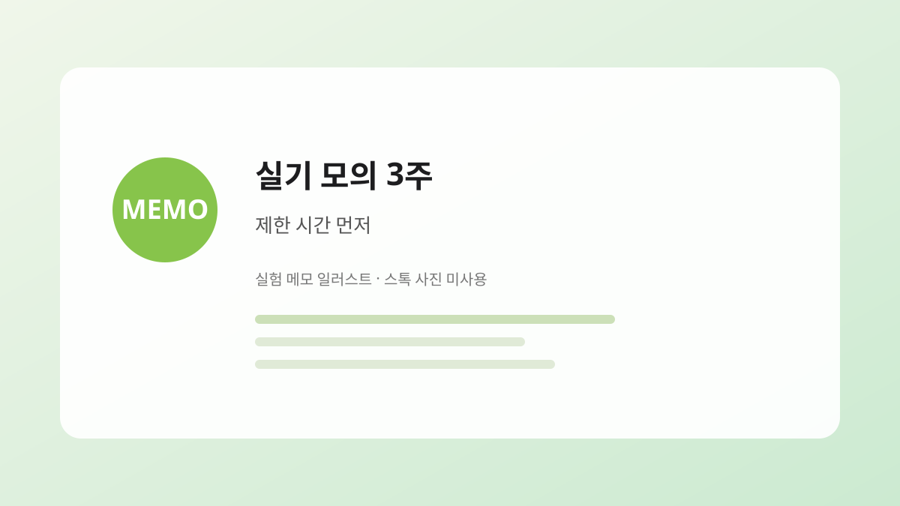

제빵기능사 시리즈
실기 모의 3주 — 맛보다 제한 시간을 먼저 맞춘 기간
2025년 3월 말~4월, 시험 약 6주 전부터 실기 모의를 주 1회 타이머로 고정했습니다. 맛·모양보다 제한 시간 안에 끝내는 연습이 먼저였고, 그 3주 동안 맞춘 순서와 줄인 욕심을 정리합니다.
기능사 시리즈와 빵 R&D 일지
최근 발행·수정 기준

2025년 3월 말~4월, 시험 약 6주 전부터 실기 모의를 주 1회 타이머로 고정했습니다. 맛·모양보다 제한 시간 안에 끝내는 연습이 먼저였고, 그 3주 동안 맞춘 순서와 줄인 욕심을 정리합니다.

제빵기능사 준비·시험·합격 경험을 6편으로 나눕니다. 6편 모두 발행. 각 편에서 다룰 내용과 읽는 순서, 시리즈 이후 빵 R&D로의 연결을 정리했습니다.

제빵기능사 시리즈 6편을 한 장 분량으로 압축했습니다. 시험 구조, 월별 초점, 실기·필기에서 망한 포인트, 시험 당일 체크리스트를 표처럼 정리합니다. 2024~2025 제 경험 기준이며 최신 일정은 공식 공고를 확인하세요.

밤식빵 R&D 일지가 길다면 이 글만 보세요. 토핑·수분·보관·시럽·재료·브러싱 일곱 가지 판단, 겨울 발효·개방 표, 신선 밤 크기 선별, 망하기 쉬운 점, 메모 양식을 한곳에 담았습니다. 완성 레시피·그램 표가 아닙니다.

일지가 많다면 실전 정리부터 보세요. 이 글은 실험 결과가 아니라, 짧게/깊게 읽는 경로만 안내합니다.

2025년 5월 합격 후 시험용 연습과 밤식빵 연구를 분리한 이유, R&D 일지 포맷, 변수 하나만 바꾸는 실험 방식을 정리했습니다. 시리즈 마지막 편이자 빵 R&D 카테고리로의 연결점입니다.
정지석이 정리한 관점·편집 메모
제빵기능사 학원 첫 달, 추천 목록을 따라 사다 보니 서랍이 찼습니다. 합격 후에도 매일 쓴 것은 저울·반죽 온도계·타이머 세 가지였습니다. 무엇을 남기고 무엇을 접었는지 기준을 적습니다.
기능사 학원 오븐과 집 오븐은 같은 200°C라도 결과가 달랐습니다. 다이얼 숫자를 믿지 않고 상화 온도·예열 시간·굽기 중 문 열림을 메모에 남기기로 한 이유와, R&D에서도 이어 쓰는 방법을 정리합니다.
밤식빵 R&D와 기능사 글에서 완성 레시피·그램 표를 의도적으로 넣지 않습니다. 제 오븐·반죽량 기준을 그대로 옮기면 어긋날 수 있어서이며, 대신 일지에서 검증된 순서와 판단 기준을 남기기 위함입니다.
시리즈 입문과 목차
2025년 3월 말~4월, 시험 약 6주 전부터 실기 모의를 주 1회 타이머로 고정했습니다. 맛·모양보다 제한 시간 안에 끝내는 연습이 먼저였고, 그 3주 동안 맞춘 순서와 줄인 욕심을 정리합니다.
밤식빵 R&D 일지가 길다면 이 글만 보세요. 토핑·수분·보관·시럽·재료·브러싱 일곱 가지 판단, 겨울 발효·개방 표, 신선 밤 크기 선별, 망하기 쉬운 점, 메모 양식을 한곳에 담았습니다. 완성 레시피·그램 표가 아닙니다.

필기·실기 구조를 먼저 잡고, 2024년 9월부터 2025년 5월까지 월별로 무엇을 했는지 정리했습니다. 학원·자습 비율, 초반에 헷갈렸던 점, 지금 돌아보면 바꾸고 싶은 일정도 함께 적습니다.
제빵기능사 준비·시험·합격 경험을 6편으로 나눕니다. 6편 모두 발행. 각 편에서 다룰 내용과 읽는 순서, 시리즈 이후 빵 R&D로의 연결을 정리했습니다.
퇴사 후 빵 터졌음!은 제빵기능사 합격 경험과 빵 R&D를 기록합니다. 독자는 실전 정리 허브와 기능사 시리즈를 먼저 읽고, 일지는 실험 근거로만 참고하면 됩니다. 완성 그램 표·스톡 사진으로 실험을 가장하는 글은 올리지 않습니다.
편집·운영
2024년 9월 퇴사 후 제빵기능사를 준비해 2025년 5월 합격했습니다. 어릴 적 동네 빵집의 밤식빵을 다시 만들기 위해, 합격 이후에도 반죽·발효·보관 변수를 직접 실험하고 실패를 기록합니다. 완성 레시피보다 '무엇을 바꿨고 무엇이 남았는지'를 남기는 운영자입니다.
운영자 소개 보기 →오류 제보, 콘텐츠 관련 문의는 이메일로 연락해 주세요.
onhopetoj@gmail.com